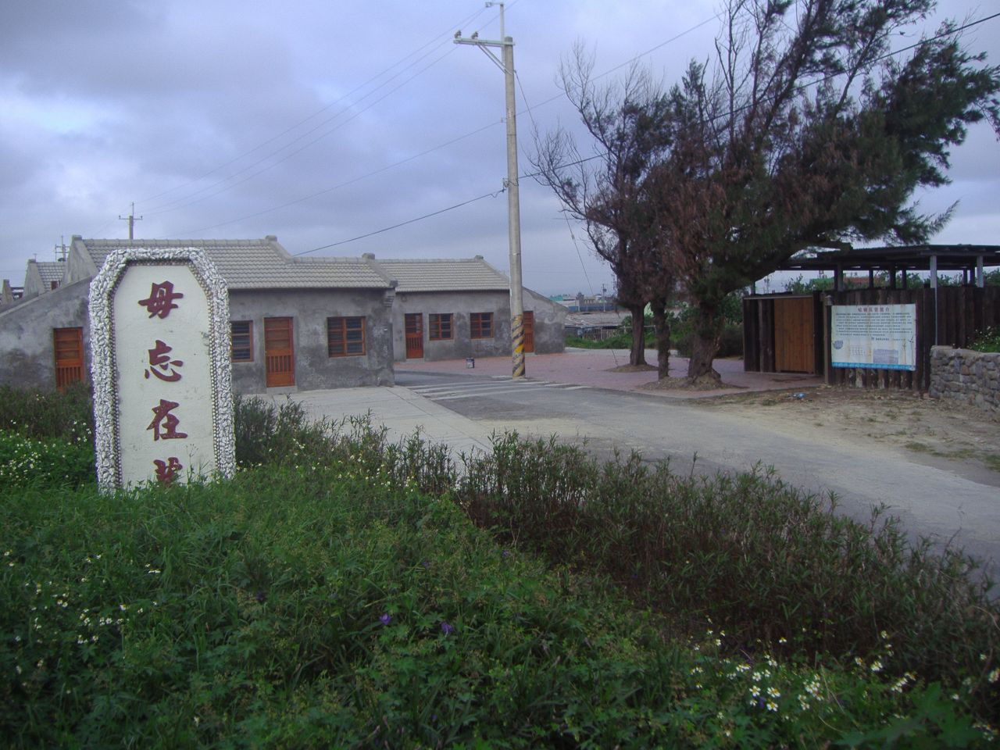
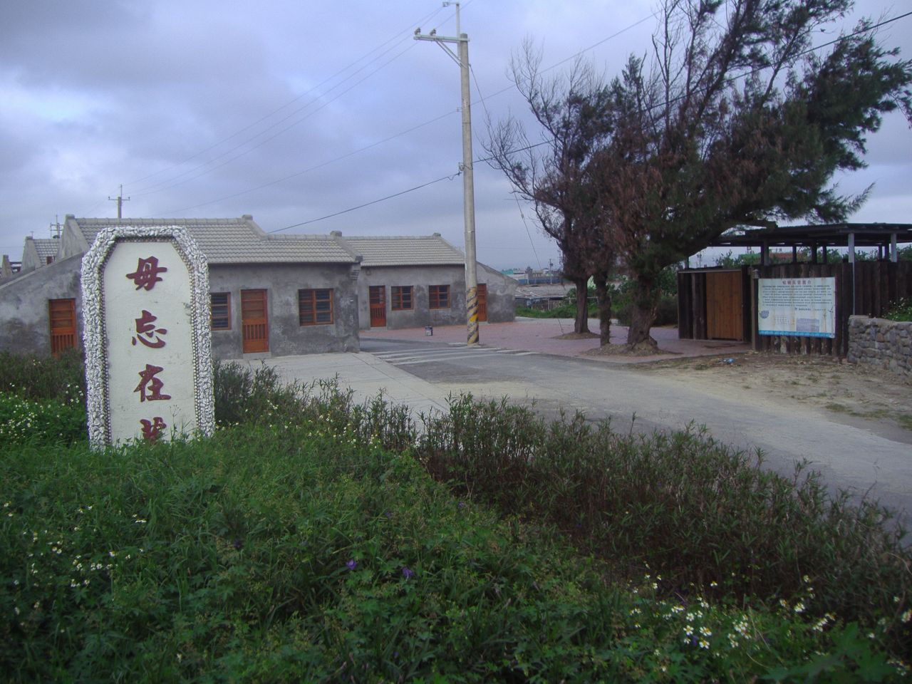
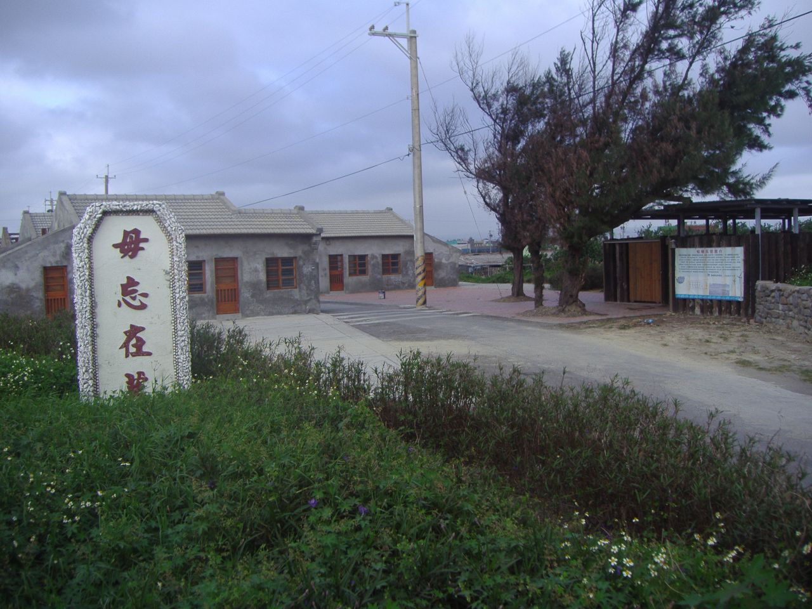

關於線西的蛤蜊兵營:
「蛤蜊兵營」是以前駐紮於線西海防部隊所留下的建築物，共有11棟均有五十年的歷史遺址，由於造型特殊，是以蛤蜊殼所建之的「毋忘在莒」精神堡壘，和充滿戰地色彩的進口處碉堡，將此規劃為藝術村與海邊生態遊憩區，除了特殊的房舍可供藝術家進駐外，附近的溝渠內還看得到魚蝦蟹，完全沒有污染，適合生態遊憩區。
 

「蛤蜊兵營」是以前駐紮於線西海防部隊所留下的建築物，共有11棟均有五十年的歷史遺址，由於造型特殊，是以蛤蜊殼所建之的「毋忘在莒」精神堡壘，和充滿戰地色彩的進口處碉堡，將此規劃為藝術村與海邊生態遊憩區，除了特殊的房舍可供藝術家進駐外，附近的溝渠內還看得到魚蝦蟹，完全沒有污染，適合生態遊憩區。
